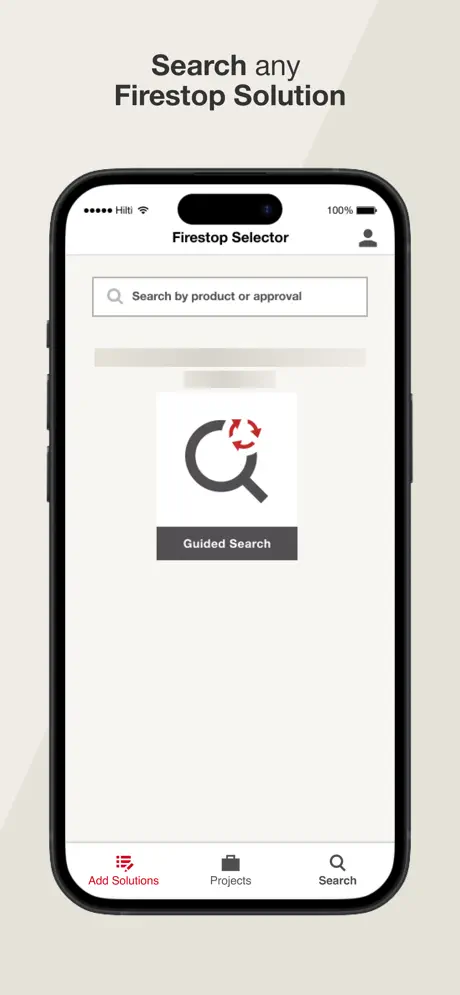
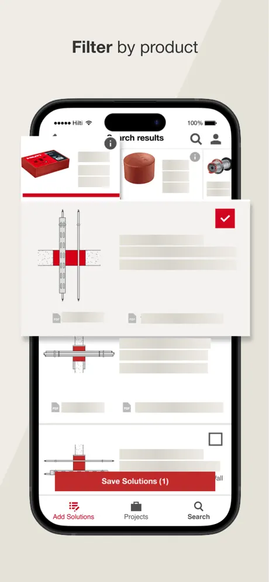
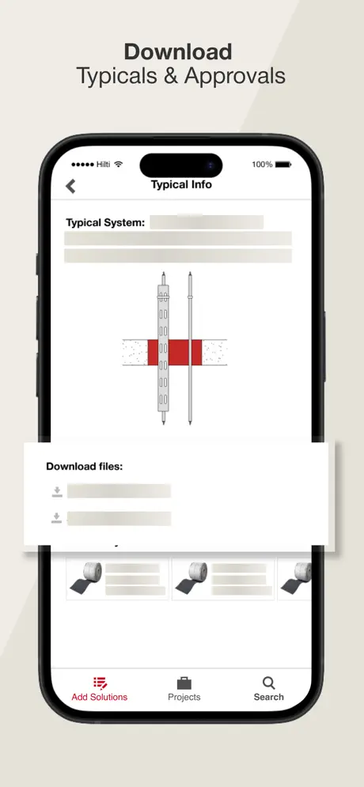
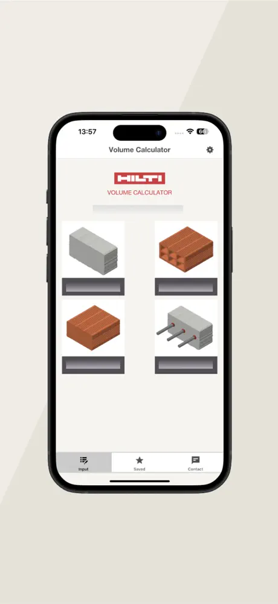
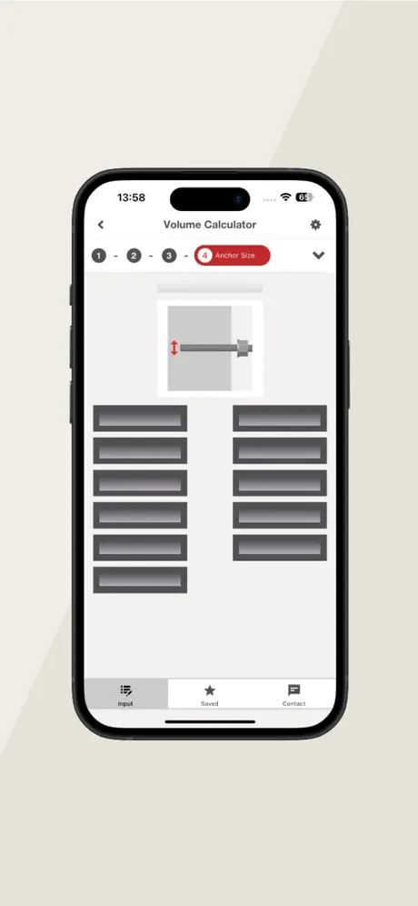
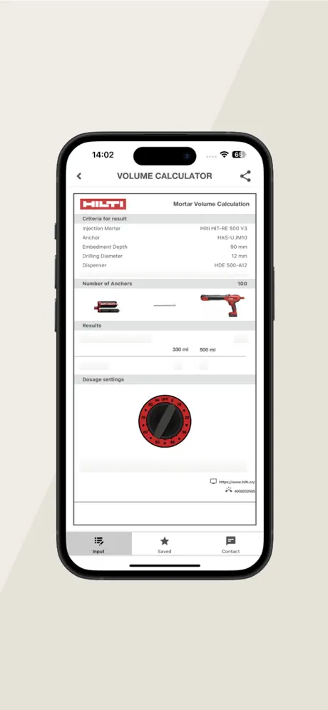

Multi-region firestop compliance software in .NET MAUI
Passive fire protection is a code-compliance problem before it is a product problem. Specify the wrong firestop system for a penetration and the building fails inspection — so the app a contractor pulls out on a jobsite has to be authoritative, current, regionally correct, and usable in a basement riser with no signal.
On source code: both applications are Hilti AG products and the source is assigned IP — there is no public repository, and there should not be. Everything below is my own architectural description of work I did, written from scratch. Happy to go deeper in a technical conversation, or to whiteboard any of it.
Context & Scope
The Firestop Selector exists to answer one question quickly and defensibly: for this penetration, through this barrier, with this service passing through it — which Hilti firestop system is approved, and what is the approval document that proves it? The answer is jurisdiction-specific. A UL-listed system in the United States is not the same artefact as an ETA in the wider European market, which is not the same as a German DIN approval, and the product ranges, terminology, guided-selection logic and even the legally required outputs differ across all three.
That is the defining architectural constraint of the product, and it is what the case study is really about. The app is not one application localised three ways. It is one codebase producing three regulatory variants, each with its own approvals corpus, its own selection flow, and its own feature set that ships on its own schedule — material estimation, for instance, went live for the DIN region without touching UL or ETA.
Alongside it I worked on the Volume Calculator, a long-lived jobsite reference tool for computing material quantities. The two are complementary in exactly the way the domain demands: one tells a contractor which system is approved, the other tells them how much product to order for it — and the material-estimation work in the Selector grew directly out of that adjacency.
Constraints
- Compliance data must be correct or the feature is worse than useless. A stale approval shown with confidence is a liability. Freshness, versioning and provenance of the approvals corpus are correctness requirements, not caching preferences.
- Jobsite connectivity is unreliable by default. Firestop work happens in risers, shafts, basements and partially built structures. The library and the user's saved projects have to be usable with no network at all.
- Enterprise guardrails. Product-company release trains, formal review gates, security and compliance review, and a codebase expected to live for years across a growing regional footprint.
- A large document corpus on a phone. {{f_approvals}} digitised approvals plus {{f_typicals}} abbreviated summaries and simplified trade details — an install that has to stay searchable and fast on mid-tier hardware.



App Store listing screenshots.



App Store listing screenshots.
Architectural Blueprint
Region is a first-class dimension of the architecture, resolved at build time, not a runtime
if scattered through the codebase. The domain layer is written against region
abstractions — an approvals provider, a selection ruleset, a compliance-output formatter — and
each region supplies its own implementation. A UL-only feature cannot leak into a DIN build,
because the DIN build never compiles the code.
Amber = the region resolution path. The point of the build-time spine is that a regional feature is physically absent from the builds it does not belong to.
Decisions worth defending
- Build-time variants over runtime flags. Runtime region switching would have meant every build carrying every region's rules, every corpus schema and every UI branch — with the compliance risk that a misconfigured flag shows a German approval to a US contractor. Resolving at build time makes that failure mode structurally impossible and keeps each installed app smaller.
- The domain layer never names a region. Adding a fourth regulatory market is implementing a set of known interfaces and registering them, not auditing the codebase for places that assumed three. This is dependency inversion earning its keep on a real business requirement rather than as an architectural ornament.
- The approvals corpus is versioned, with provenance. Each document carries its source, revision and validity, and the local store is a versioned snapshot rather than an opportunistic cache. When the corpus updates, the app can tell the user what changed and what they are looking at — which matters when the output is used to justify a compliance decision.
- Full-text search runs locally. Global search spans saved projects, solutions and EJ requests, and it is served from a local index. A search that fails in a basement is a search that fails exactly when the contractor needs it.
- Sharing is a permission model, not a feature toggle. Owner / Editor / Viewer roles are enforced in the domain layer and re-validated server-side, so an offline device holding a stale role cannot be used to escalate. Client-side role checks are UX; the server check is the security boundary.
- Compiled bindings and MVVM Toolkit source generators throughout.
x:DataTypeon every view and template turns a broken binding into a build error instead of a silent empty cell — non-negotiable on screens that display compliance data.
Engineering Breakthrough
Making a regional feature genuinely independent
The clearest demonstration that the variant architecture worked is that features shipped to one region without disturbing the others. Material estimation went live for the German DIN region — letting a user estimate required product volume for better planning and less waste — while the UL and ETA builds shipped unrelated work on their own cadence. Global search landed across all three, but with different entity sets per region because the ETA organisational model uses folders where UL surfaces engineering judgments.
Doing that on a branch-per-region codebase means three merges, three regression passes and a slow drift into three products. Doing it on a runtime-flagged monolith means every build carries every region's risk. The build-time variant spine is what let a regional feature be genuinely regional — and it is the decision I would defend hardest in an interview.
When a difference between customers is regulatory rather than cosmetic, resolve it as early in the build as you can. Cosmetic differences are fine as configuration. Differences that carry legal consequence should be impossible to get wrong at runtime, because eventually someone will get them wrong at runtime.
Search that has to work offline, over a corpus that keeps growing
Introducing global search across saved projects, solutions, folders and EJ requests meant one query surface over several entity types with different shapes, different lifecycles and different sync states — some fully synced, some pending upload, some shared in from another user. Getting fast, correct results without a network round trip required treating search as a local index maintained alongside the data rather than as an API call, and being explicit about how pending local writes appear in results. A user who just saved a solution offline expects to find it immediately; anything else reads as data loss.
Performance on a document-heavy install
A compliance app that carries thousands of approval documents and their PDFs is fighting install size, memory and launch time simultaneously. The levers that mattered were the standard .NET MAUI ones applied deliberately rather than switched on blindly: ahead-of-time compilation with a curated trimming configuration and explicit preserve descriptors for the reflection surface that genuinely needed it, lazy DI registration so the container builds factories at startup rather than materialising services an inspector may never open, compiled bindings to remove reflection from binding resolution, and deferring non-critical startup I/O until after first frame so the UI renders from local state immediately.
A note on numbers: the work above cut cold start by roughly {{m_c_coldstart}} — an approximate figure from my own before/after measurements, not a rigorously instrumented benchmark. I am publishing it as an estimate, not a result. Ask me in an interview and I will tell you what I measured, how, and how confident I am in it.
Leadership & Delivery
- One pipeline, every variant. A single merge produces signed builds for each regional variant with its own bundle identity and signing configuration — App Center for build and signing, Firebase App Distribution for internal QA rings, TestFlight for regional beta groups. Release engineering is a pipeline, not a person.
- Telemetry-gated promotion. Crashlytics and analytics gate rollout advancement, so promotion is a data decision rather than a calendar decision — which matters more, not less, when three variants are moving on different schedules.
- Review against a published rubric. Layer boundaries, region-abstraction compliance, threading and lifetime, testability, failure behaviour. Reviewing against a written standard rather than personal taste means a junior engineer can predict the review before requesting it, which is what actually shortens the cycle.
- Reference implementations over documentation. For each recurring shape — a new region implementation, a new synced entity, a new use case — there is an annotated canonical example in the codebase. New engineers copy a correct shape instead of inventing one under deadline.
- Mentorship. I mentored {{m_c_engineers}} engineers and interns on the architecture, the review standard and the release process.
Scope & Impact
- {{f_regions}}
- Regulatory regions — UL (US), ETA (Europe), DIN (Germany) — served from a single unforked codebase.
- {{f_approvals}}
- Digitised UL, ETA and DIN approvals in the searchable offline library.
- {{f_typicals}}
- Abbreviated summaries and simplified trade details available alongside the full approvals.
- 2
- Publicly listed Hilti applications worked on — Firestop Selector and Volume Calculator.
Every figure above is verifiable from the public App Store listings linked at the top of this page. Nothing here is estimated.